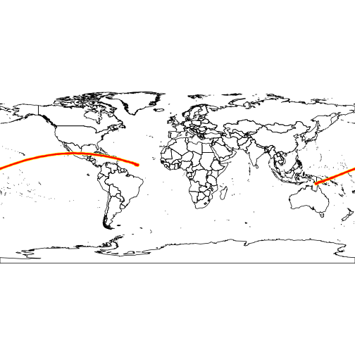
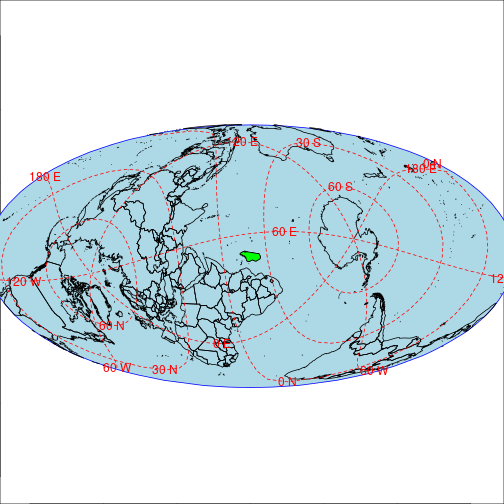
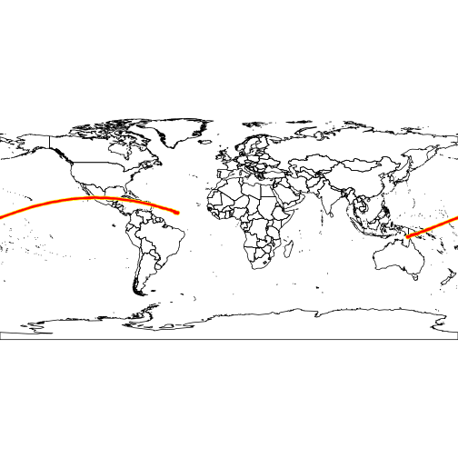
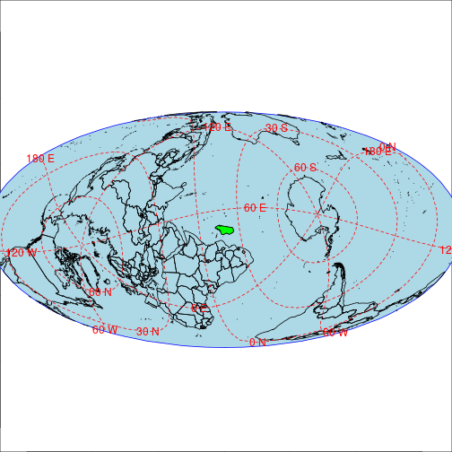
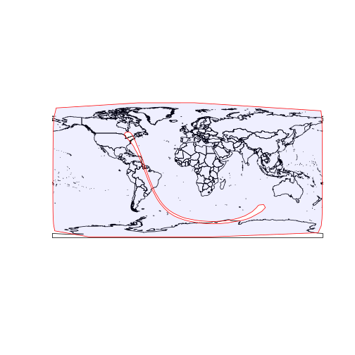
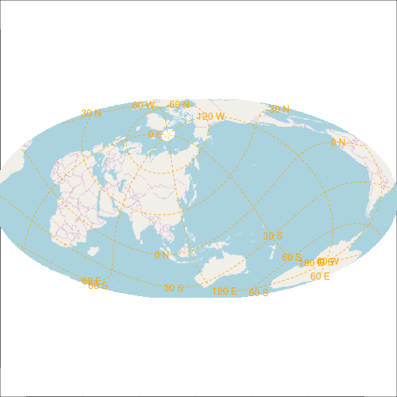
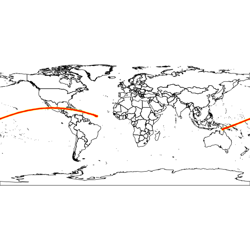
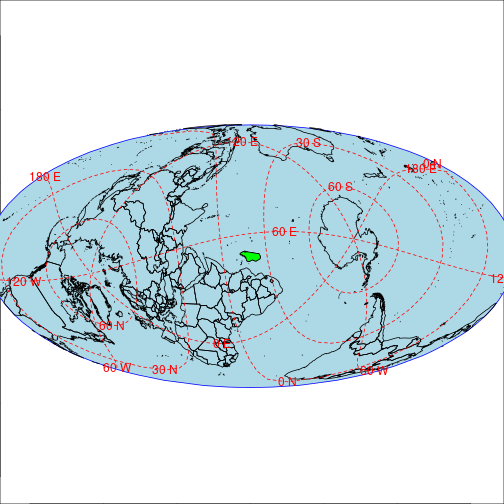

library('mapmisc')## Loading required package: sp## Loading required package: raster## map images will be cached in /tmp/Rtmps8FqfY/mapmiscCacheif(!exists('mapmiscCachePath'))
mapmiscCachePath = system.file('extdata', package='mapmisc')
if(!exists('mapmiscCacheReadOnly'))
mapmiscCacheReadOnly = TRUE
mapmiscCachePath## [1] "/home/patrick/workspaceOxygen/diseasemapping/www/mapmiscCache"options(
mapmiscCachePath = mapmiscCachePath,
mapmiscCacheReadOnly = mapmiscCacheReadOnly,
mapmiscVerbose=TRUE)
getOption("mapmiscCachePath")## [1] "/home/patrick/workspaceOxygen/diseasemapping/www/mapmiscCache"getOption("mapmiscCacheReadOnly")## [1] FALSESpackages = c('rgdal', 'rgeos', 'geosphere', 'maptools')
if(all(unlist(mapply(requireNamespace, package=Spackages, MoreArgs=list(quietly=TRUE))))){
library('rgdal')
data('wrld_simpl', package='maptools')
country='Japan'
Dcountry = grep(country, wrld_simpl$NAME)
x=wrld_simpl[Dcountry,]
myCrsO = moll(x, angle=25)
plot(wrld_simpl)
plot(attributes(myCrsO)$regionLL, border='red', col='#0000FF10', add=TRUE)
myMap = openmap(myCrsO, zoom=1, fact=2)
map.new(myMap)
plot(myMap, add=TRUE)
gridlinesWrap(myCrsO, lty=2, col='orange')
xTcrop = wrapPoly(x=wrld_simpl, crs=myCrsO)
DcountryT = grep(country, xTcrop$NAME)
map.new(xTcrop, buffer=1000*1000)
plot(attributes(myCrsO)$ellipse, add=TRUE, col='lightBlue', border='blue')
plot(xTcrop,add=TRUE, col='grey')
plot(xTcrop[DcountryT,], col='red', add=TRUE)
gridlinesWrap(myCrsO, lty=2, col='orange')
country='Madagascar'
Dcountry = grep(country, wrld_simpl$NAME)
x=wrld_simpl[Dcountry,]
myCrsMoll = moll(x, angle=100)
plot(wrld_simpl)
plot(attributes(myCrsMoll)$crop, border='red', col='#0000FF10', add=TRUE)
xTcrop = wrapPoly(x=wrld_simpl, crs=myCrsMoll)
DcountryT = grep(country, xTcrop$NAME)
map.new(xTcrop)
plot(attributes(myCrsO)$ellipse, add=TRUE, col='lightBlue', border='blue')
plot(xTcrop,add=TRUE, col='grey')
plot(xTcrop[DcountryT,], col='green', add=TRUE)
gridlinesWrap(crs=xTcrop, lty=2, col='red')
}## rgdal: version: 1.2-15, (SVN revision 691)
## Geospatial Data Abstraction Library extensions to R successfully loaded
## Loaded GDAL runtime: GDAL 2.2.1, released 2017/06/23
## Path to GDAL shared files: /usr/share/gdal/2.2
## GDAL binary built with GEOS: TRUE
## Loaded PROJ.4 runtime: Rel. 4.9.3, 15 August 2016, [PJ_VERSION: 493]
## Path to PROJ.4 shared files: (autodetected)
## Linking to sp version: 1.2-5## zoom is 1 , 4 tiles
## http://tile.openstreetmap.org/
## http://tile.openstreetmap.org/
## downloading http://tile.openstreetmap.org/1/0/0.png
## downloading http://tile.openstreetmap.org/1/0/1.png
## downloading http://tile.openstreetmap.org/1/1/0.png
## downloading http://tile.openstreetmap.org/1/1/1.png
## reprojecting 262144 cells...## Warning in rgdal::rawTransform(projto_int, projfrom, nrow(xy), xy[, 1], :
## 197675 projected point(s) not finite## done
## copying colortable for http...tile.openstreetmap.org.